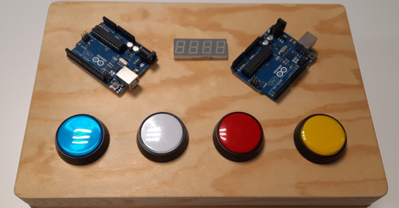

Speden spelit -speedtest
The task was to build an implementation that resembled the image. An Arduino microcontroller, buttons, and led lights were used, and the result was showed on a seven-segment display. The idea was to press a button corresponding to the light. Unlike the picture, the buttons and lights were separate.
If a correct button was pressed, the score was added by one, displayed real-time on the display, and next light was turned on. If a wrong button was pressed, the game ended and there was a certain sound for losing the game. The logic for the game was programmed in Arduino IDE.

Virtual ATM simulation
We implemented a virtual ATM simulation with Qt as showed in the picture. RFID reader was used to get into the account. The UI is made with Qt Widget and all of the information is retrieved from a MySQL database using HTTP requests.
The features include changing account to debit/credit, deposit, withdraw, account balance, and transactions.
Project GitHub: https://github.com/vsuho/Virtual-ATM-simul
Movie app
We implented a movie web page with React. The features of the app include displaying trending movies on the front page, browsing movies using different filters, and looking up Finnkino showtimes that are received from Finnkino API. An account can be created
to create or join fangroups and write reviews for movies. MySQL database was used to store all user information and backend was created with Node.js.

Project GitHub: https://github.com/movieApp-19
Health app for mobile
We implemented a mobile health app using React Native and Expo framework. The features include steps, sleep, excercise, calculators (BMI, calories), and eating. Fineli API is used to get the ingredients of a certain food, which are then used in the app.
Also there are graphs to visualise the steps and sleep data.

Project GitHub: https://github.com/Mobile-development-R19/Health-app